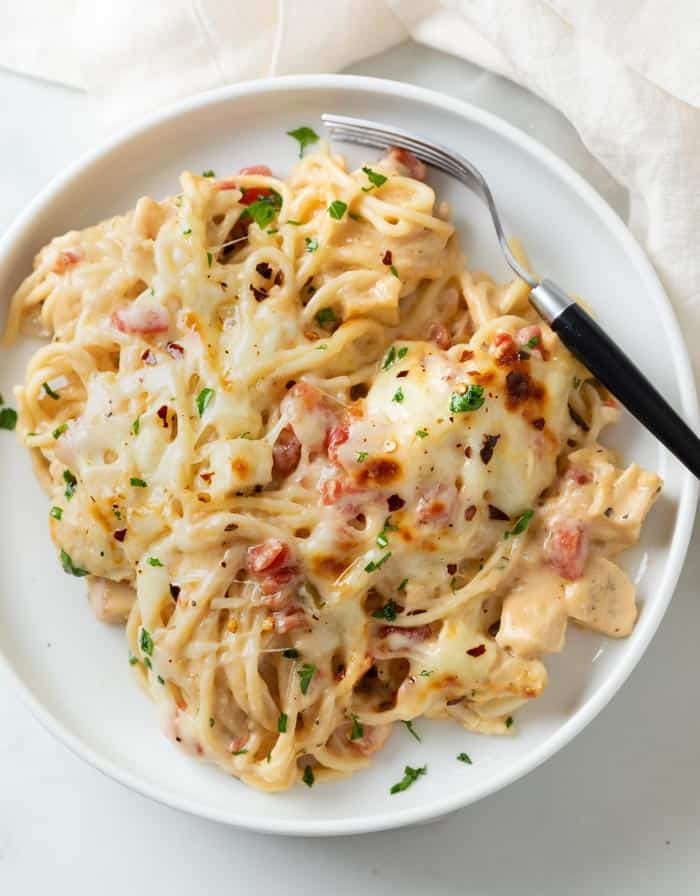

Chicken Spaghetti Recipe
Ingredients
- 1 (12 ounce) package angel hair pasta
- 1 (10 ounce) can diced tomatoes with green chile peppers
- 1 (10.75 ounce) can condensed cream of chicken soup
- ¾ (8 ounce) package processed cheese, cubed
- 2 cups chopped cooked chicken breast/li>
- ½ (4 ounce) jar sliced mushrooms, drained
- salt and pepper to taste
Directions
- Bring a large pot of lightly salted water to a boil. Add pasta and cook for 8 to 10 minutes or until al dente; drain and return to pot.
- To the pasta add the diced tomatoes with green chile peppers, cream of chicken soup, processed cheese, chopped chicken, mushrooms, salt and pepper. Cook and stir over low heat until cheese is melted and mixture is heated through.